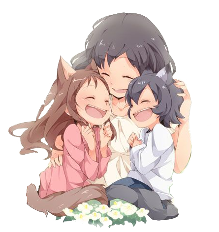

Les Enfants Loups Ame Et Yuki
Résumé
Hana et ses deux enfants, Ame et Yuki, vivent discrètement dans un coin tranquille de la ville. Leur vie est simple et joyeuse, mais ils cachent un secret : leur père est un homme-loup.  Quand celui-ci disparaît brutalement, Hana décide de quitter la ville pour élever ses enfants à l'abri des regards. Ils emménagent dans un village proche d'une forêt luxuriant. Alors que Yuki trouve la nature et la montagne fantastique, Ame étant timide a très peur de cette nouvelle vie Pourtant au fil des années leur choix de vie vont s'échanger...
Description
- Titre : おおかみこどもの雨と雪
- Genre : Animation, fantastique
- Réalisateur : Mamoru Hosoda
- Scénariste : Mamoru Hosoda
- Compositeur : Takagi Masakatsu
- Producteur : Seiji Okuda
- Studio : Studio Chizu
- Licence : Kazé
- Sortie : 21 juillet 2012
- Durée : 117 minutes
Critique
Scenario : 4/5
Image : 5/5
Personnage : 5/5
Valeur : 5/5
GLOBAL : 5/5
Bande Annonce
Trailer fait par Kazé et sortie le 3 août 2012